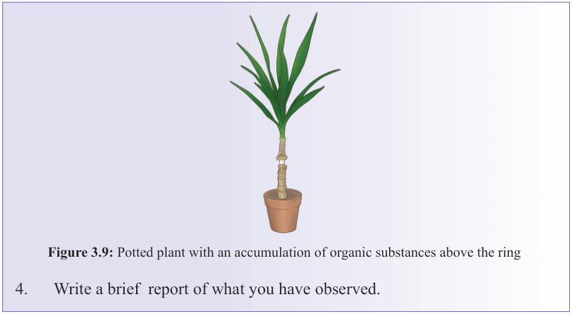
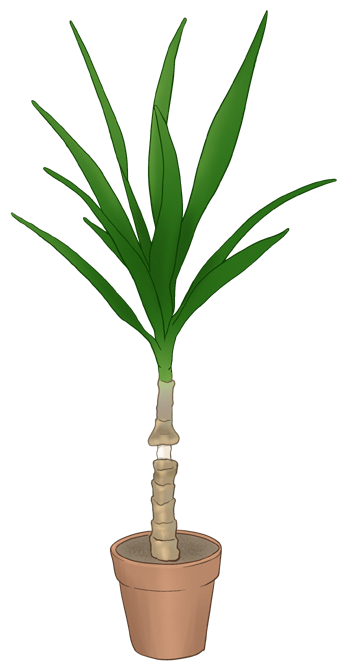

72
Student’s Book - Form Two
Biology for Secondary Schools


Figure 3.9: Potted plant with an accumulation of organic substances above the ring
4.
Write a brief report of what you have observed.
The differences between diffusion, osmosis and mass flow is summarised in the following Table.
Table 3.1: Differences between diffusion, osmosis and mass flow
Characteristic
Diffusion
Osmosis
Mass flow
Substance transported
Gases, liquids, and ions
Water
Solids, liquids, and gases
Transport structures
None
Semi-permeable membrane
Cytoplasm or vessels
Cause of movement
Diffusion gradient
Osmotic pressure
Difference in pressure
Chapter summary
1.
Transport is necessary for the
movement of substances within,
into, and out of cells to enable
vital life processes to take place.
2.
Transport of materials in living
organisms can be carried out through diffusion, osmosis, or
mass flow.
3.
Concentration gradient is the
difference in the concentration of
a substance between two regions.
4.
The important processes in the
body that involve diffusion
include gas exchange in the lungs,
absorption of nutrients into cells,
absorption of digested food in
08/04/2026 10:18:18